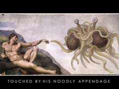

¿Qué es Sindioses.org?
Sindioses.org es un sitio Web apolítico, sin ánimo de lucro, dedicado a promover el librepensamiento, la separación de la Iglesia y el Estado, el escepticismo, la divulgación científica y el ateismo en Hispanoamérica.
Sindioses.org pretende por medio de sus publicaciones —las cuales expresan el punto de vista de sus autores— poner a disposición de la comunidad hispana recursos informativos sobre escepticismo, racionalismo, ateísmo y noticias de interés científico.
Sindioses.org no pretende atacar a la comunidad teísta como tal. En lugar de esto, éste sitio debe considerarse como un lugar en el que los teístas puedan mirar sus creencias desde otro punto de vista y en el que los ateos y agnósticos pueden encontrar artículos afines a una postura escéptica.
¿Qué es precisamente un ateo y en qué se diferencia de un agnóstico?
La palabra ateo viene de las raíces griegas a = sin y Theos = Dios. Aunque muchas personas definen ateo como “persona que niega la existencia de Dios” una definición más acertada es “persona que considera que todos los dioses en los que la humanidad ha creído alguna vez son seres imaginarios sin correspondencia alguna en el mundo real”. En efecto, opinamos que las afirmaciones de los creyentes acerca de la existencia y atributos de los dioses no han cumplido con la carga de la prueba, y ante la falta de evidencia, descreemos de esas afirmaciones.
Para detallarlo de forma pintoresca, los ateos pensamos que los dioses, desde la diosa de la fertilidad de los tiempos paleolíticos (representada por estatuillas como la Venus de Willendorf) hasta los actuales Jehová, Alá, Krisná, los siete dioses nipones de la buena suerte, etc., son seres irreales de la misma manera que lo son Papá Noel, o los duendes. Algunas personas dicen creer en Dios pero al preguntársele que entienden por Dios, estas responden que Dios es todo el universo, y no le atribuyen a este ningún poder místico o sobrenatural. En este sentido son ateos ya que no creen que entidades como Zeus, Thor, las hadas o Jehová en realidad existan.
El agnosticismo es “la postura de que los valores de verdad de ciertas afirmaciones —especialmente acerca de la existencia de alguna deidad, pero también sobre otras afirmaciones religiosas y metafísicas— son desconocidas o no pueden ser conocidas” (Wikipedia). Si bien en sentido popular agnosticismo es una “posición intermedia” entre el ateísmo y el teísmo, hablando estrictamente son dos áreas distintas. Para resumir, se puede decir que teísmo y ateísmo se refieren a lo que una persona cree, mientras que gnosticismo o agnosticismo se refieren a lo que una persona sabe o cree que puede o no saberse. Dentro del agnosticismo hay agnósticos ateos (que no creen que existan dioses, pero no lo niegan como una posibilidad)
Una postura más enérgica es la del antiteísmo, es decir, la oposición a la noción de la divinidad y las religiones que de ella se derivan y las combate activamente. Entre los antiteístas más recientes se encuentra Christopher Hitchens, autor de libros tales como The Missionary Position: Mother Theresa in Theory and Practice y God is not Great: The Case Against Religion. Pero esta es una posición adicional a la del ateísmo que algunos ateos adoptan.
Deseamos hacer hincapié en una noción que a menudo genera confusión: El hecho de declararse ateo simplemente implica que descreemos de las afirmaciones sobre la existencia de las divinidades. No significa otra cosa.
Sin embargo, los editores de este sitio consideramos que el ateísmo por sí mismo no es suficiente. Uno puede no creer simplemente porque desconfía de la autoridad, o por rebeldía, o porque nada le interesa. Esas posturas son igualmente ateas, pero nos parecen insuficientes. Nuestra posición es que otras convicciones deseables y a las que adherimos son las siguientes:
Escepticismo científico, la posición, basada en el pensamiento crítico, en la que se cuestiona la veracidad de las afirmaciones que carecen de prueba empírica suficiente.
Humanismo secular, un sistema que postula una ética humana y la interpretación racional de los fenómenos naturales, y afirma que los problemas humanos deben ser solucionados por los humanos y que es deber individual y colectivo la búsqueda de la mayor comodidad, satisfacción y desarrollo pleno de la especie. Uno de sus objetivos más importantes es el de construir un sistema ético ajeno a toda postura religiosa, que apunte a mejorar el bienestar humano y a fomentar la responsabilidad individual.
¿Por qué tanto empeño en atacar a las religiones organizadas?
Las religiones construyen sus creencias sobre actos de fe que son incuestionables, por esta razón cada religión mira con desdén el cuestionamiento y la exigencia de evidencias por parte de los ateos, así como también a los otros grupos religiosos. Las religiones organizadas mantienen a sus adeptos con una venda intelectual. En Sindioses.org estamos convencidos que solo podemos acercarnos a la verdad si cuestionamos todas las creencias sin excepción y hacemos grandes esfuerzos en buscar evidencias para que cualquier afirmación sea aceptada.
Los efectos nocivos de las religiones organizadas son muchos. Por ejemplo:
Muchos jóvenes adventistas del séptimo día ven limitadas sus posibilidades de realizar estudios universitarios porque se les enseña que es pecado asistir a clases en sábado.
Muchos jóvenes testigos de Jehová malgastan sus vidas trabajando en las “casas de Betel” para mantener el negocio editorial de la Watch Tower.
El Vaticano, nación minúscula sede del culto católico, de forma irresponsable se opone al uso de anticonceptivos, ya que según el dogma católico los actos sexuales solo deben estar destinados a la reproducción.
Este mismo estado se opone a que los estados establezcan una legislación que permita las uniones de homosexuales en una interpretación medieval sobre el erotismo y el afecto, con lo cual el Vaticano favorece y alienta la discriminación de gays y lesbianas.
Otro caso de discriminación está dado por los brahmanes, los líderes del hinduismo, los cuales favorecen la discriminación de miles de hindúes de las castas inferiores, al considerar que son impuros de nacimiento y que “su karma es malo”.
Cientos de testigos de Jehová han dejado morir a familiares suyos por negarles una transfusión de sangre, mientras que otros grupos cristianos no consultan al médico porque creen que esto es desconfiar del poder de Dios.
Los fundamentas islámicos dictan sentencias de muerte (fatwa) a quienes no piensan como ellos, además de negar los derechos más básicos a las mujeres.
Los bautistas del sur de EEUU fueron uno de los grupos que defendieron el mantenimiento de la esclavitud argumentando que la Biblia sustentaba esta práctica por mandato y ejemplo (y no estaban equivocados).
El antisemitismo fue sembrado muy bien en Europa gracias a los padres de la Iglesia Católica.
Muchas religiones organizadas se han opuesto a la investigación científica, lo cual es otro efecto indeseable del fundamentalismo. Cabe recordar la condena de la Iglesia Católica a Galileo Galilei, la oposición actual a la investigación con células madre, el rechazo de los mormones, testigos de Jehová, pentecostales, bautistas entre otros, a la biología evolutiva y la geología histórica.
La época cuando la religión gobernó a Occidente recibió el nombre de la “Edad de las tinieblas”, Sindioses.org es un esfuerzo para que estos tiempos no regresen y para que sus lecciones queden bien aprendidas.
¿Por qué faltan el respeto a la religión?
Por sorprendente o incomprensible que les resulte a los creyentes, nosotros consideramos a la religión una idea más, y por lo tanto sujeta a los mismos estándares de prueba que el resto de las ideas. El respeto debe ganarse, y en el pensamiento religioso no hay nada intrínsecamente intocable que deba impedir el análisis racional. Ateos contemporáneos consideran que esta falta de actitud crítica hacia la religión, y esa “licencia para ser intocable” en todos los aspectos en los que la religión interviene, es uno de los grandes males de nuestra sociedad y debe combatirse activamente. En esto, Sin Dioses también está de acuerdo con ellos.
¿Por qué sólo se ocupan del cristianismo? ¿Por qué no se concentran en el islam, el budismo u otras religiones?
En Latinoamérica esas religiones son minoría. Si bien es verdad que los males producidos por las religiones no se limitan al cristianismo, esta es la religión que ha formado (o más bien deformado) gran parte de la ideología de nuestra sociedad. Por otra parte, es lo que más conocemos. Es por eso que el foco del sitio ha resultado tener ese sesgo.
Sin embargo, no es cierto que sólo nos enfoquemos en el cristianismo: hay artículos sobre el islam en nuestro sitio.
En cualquier caso, la cantidad de personas que creen en una religión no tiene relación con si esa religión es verdadera o no, y creer lo contrario es el argumentum ad populum <http://es.wikipedia.org/wiki/Argumentum_ad_populum>.
¿Por qué niegan la existencia de Dios?
Esa pregunta no es justa. Cuando los creyentes hacen ésta pregunta están dando por sentado que la existencia de Dios está ya demostrada. Lo que hacemos los ateos no es una negación, sino la afirmación que los dioses (Amón Rá, Jehová, Quetzacoatl, Bochica, etc.) son seres imaginarios sin correspondencia en el mundo real.
¿Pueden ustedes demostrar que Dios NO existe?
No es el ateo el que debe probar que Dios no existe, es el teísta el que está en la obligación de mostrar pruebas directas de la existencia de este ser, ya que él es quien está haciendo la afirmación. Suponga que alguien le dice que cree que en su jardín hay duendes y usted le dice que solo le creerá hasta que presente pruebas directas e incontrovertibles. ¿Está haciendo usted mal por plantear su escepticismo? De ninguna manera. Si alguien cree que hay duendes en su jardín es él quien debe aportar las pruebas. Lo mismo se aplica al caso de la discusión sobre el dios cristiano o cualquier otra divinidad. El creyente tiene la carga de la prueba. El ateo no.
¿Acaso el ateísmo no es otra religión, otro tipo de fe?
No. El ateísmo no es otra fe, es una postura filosófica basada en la lógica y la razón. De hecho la fe es la aceptación de algo cuando no hay evidencias de ello o aún cuando las evidencias son contrarias a la creencia, tal como el nacimiento virginal de Jesús o el diluvio universal. Cuando el ateo considera que no puede aceptar que Jehová o Visnú sean entes reales no está haciendo un acto de fe tal como hacen los cristianos al aceptar el nacimiento virginal de Jesús, simplemente está ejerciendo su escepticismo al no aceptar nada como cierto hasta poseer pruebas suficientes. La postura del ateo no puede considerarse fe, de la misma manera que nadie clasificaría como fe o creencia religiosa la idea de que Papá Noel no existe. El agnosticismo tampoco puede considerarse como un tipo de fe.
¿Los ateos son satanistas?
De ninguna manera. Los ateos consideramos la idea de Satán tan ridícula como creer en el Ratón Pérez. El término ateo es considerado ofensivo en muchas partes dado que la Iglesia Católica ha perseguido las ideas seculares por muchos siglos. También dentro de la imaginación popular (principalmente en las regiones rurales) se asocia el ateísmo con la carencia de valores, pero esto es absurdo. Si bien es cierto que puede haber ateos de mal proceder, la mayoría de los ateos consideran que el fomento de valores tales como la honradez, la honestidad, la tolerancia y la compasión son la clave para crear una sociedad en paz, algo que nos resulta inevitable para nuestra continuación exitosa como especie. Además sabemos que, de no hacerlo los seres humanos, no vendrá un mago celestial a crear una sociedad mejor.
Si no son satanistas, ¿por qué su sitio tiene ilustraciones de demonios?
Para contestar brevemente: Los diablitos del sitio nos hacen gracia. Son tan ficticios como los dioses y ponen nerviosos a los creyentes fanáticos.
Si no creen en Dios tienen que creer en el demonio, me lo dijo mi párroco/pastor/líder religioso y yo le creo
Esta respuesta parece broma, pero nos la han planteado con toda seriedad. Muchos creyentes, además de aceptar sin cuestionamiento lo que sus líderes religiosos les dicen sobre los ateos, los creen incapaces de decir nada malo o falso y discuten con los ateos diciéndoles lo que éstos realmente creen. Nada podemos decir salvo que es de una insolencia profunda decirle a una persona que no piensa lo que piensa.
¿Los ateos son comunistas?
Durante la Guerra fría se generalizó la idea que los ateos son comunistas. El comunismo y el ateísmo son ideas que pertenecen a campos diferentes. Stalin hizo el ateísmo parte de su sistema político, pero esto no debe llevar a generalizaciones. En la comunidad atea hay un amplio rango de ideas políticas. Afirmar que todos los ateos son comunistas es como afirmar que todos los cristianos de EEUU son republicanos. Véase más arriba lo que realmente significa ser ateo.
Respecto a Sindioses.org informamos que este sitio Web es apolítico.
¿Qué es el ateísmo político?
El ateísmo político es el conjunto de ideas que intentan oponerse a las religiones como instituciones humanas. Los ateos políticos no aceptan las directrices de ningún cura, brahmán, pastor o líder religioso y aparte de esto procuran disminuir la influencia de las religiones en la sociedad. No debe confundirse el concepto “ateísmo político” con la política en el sentido normal del término: arte que trata del gobierno. Son conceptos separados. Un ateo puede tener cualquier ideología política (o carecer de ella). Se habla de “ateísmo político” porque define una actitud política, en el sentido de postura social.
¿Tienen los ateos un símbolo que los identifique?
Distintas agrupaciones ateas y humanistas tienen símbolos identificatorios.
Los humanistas seculares, un grupo que tiene mucho en común con los ateos y los agnósticos, tenemos por símbolo una silueta humana que expresa la libertad de los dogmas y la grandeza del espíritu humano. |
|
Este es el logo de American Atheists [*], creado en 1963 al formarse dicha asociación. La similitud con el átomo se eligió en reconocimiento de la era atómica y como símbolo de los hallazgos científicos clásicos. El orbital vertical se encuentra truncado para representar la “A” de Ateísmo. La “A” interior representa el nombre habitual que los estadounidenses usan para su país, America. |
|
|
Otro logo ateo encontrado en Internet (si tiene más datos sobre el mismo, ¡cuéntenos!) |
|
Estas imágenes son representaciones de la Unicornia Rosada Invisible, una religión paródica que se utiliza para satirizar las creencias teístas, que adopta la forma de una unicornia que es paradójicamente invisible y rosada. Es una ilustración retórica utilizada por ateos y otros escépticos religiosos. Se utiliza para argumentar que las creencias sobrenaturales son arbitrarias, reemplazando “Dios” por “la Unicornia Rosada Invisible”. Los atributos mutuamente excluyentes del color rosado y la invisibilidad, junto con la imposibilidad de refutar la existencia de la URI, satirizan propiedades que algunos teístas atribuyen a una deidad teísta. Ha llegado a considerárselo un símbolo del ateísmo. |
 |
Ya que mencionamos religiones satíricas, estas son representaciones varias del Monstruo de Espagueti Volador (MONESVOL o MEV en castellano, o FSM en inglés, de Flying Spaghetti Monster), la deidad de la Iglesia que lleva su nombre, “fe” que también se conoce como pastafarismo y que surgió como un experimento imaginario, una sátira, para ilustrar que el Diseño Inteligente no es ciencia sino una pseudociencia utilizada por los creacionistas estadounidenses para introducir el creacionismo en las escuelas. (El sitio de la Iglesia del Monstruo de Espagueti Volador, http://www.venganza.org, afirma que esa declaración es específicamente falsa y que son una religión real; es parte de su “mensaje religioso”, al igual que sus hilarantes nociones del paraíso y las pruebas de la existencia del MONESVOL.) Muchos ateos consideran muy divertida esta noción como herramienta de “combate dialéctico” con los teístas y en ocasiones cambian de discurso de “serio” a “profundamente religioso, pero con los postulados del pastafarismo”, cerrando sus frases con la invocación “RAmén” (ramen es una sopa de fideos china). Más datos en http://es.wikipedia.org/wiki/Pastafarismo . |
|
En el mundo hispanohablante, el foro de ateísmo Cyberateos propuso un símbolo para la comunidad internacional, en forma completamente separada de los trabajos preexistentes. El símbolo propuesto es una A y una T entrelazadas dentro de un círculo. Las dos letras, que representan la etimología del término ateo, las cuales forman una flecha que señala hacía arriba como símbolo de progreso y librepensamiento. (Este logo ha recibido algunas críticas por su similitud con el logo del anarquismo.) |


¿Se reúnen los ateos en asambleas o algo por el estilo?
En algunos lugares se han establecido asociaciones de ateos que buscan divulgar el pensamiento ateísta y defender los derechos de los ateos en la sociedad. Como ejemplo de estos puede citarse “Ateos de la Florida”, “Ateos de Cataluña”, o la “Sociedad de la Tierra Redonda” en Brasil. Muchos ateos mantienen comunicación entre ellos por medio de foros en Internet.
En el caso particular de Sin Dioses, disponemos de una página en Facebook: http://www.facebook.com/SinDioses.org y un blog en http://blog-sin-dioses.blogspot.com; en ambos lugares se pueden entablar conversaciones con los lectores que allí participan. Tenga en cuenta, sin embargo, que ambos lugares están moderados y tienen reglas para su participación. Consulte la información correspondiente en ambos para más datos.
Si Ud. utiliza Twitter, puede seguirnos como @sindioses_org; allí se publican las novedades publicadas en el sitio y en el blog para facilitar su seguimiento.
¿Acaso la religión no es necesaria para mantener la moral en el mundo?
Si bien es cierto que muchas personas religiosas son honestas y honradas gracias a la religión es falso asumir que una persona o una sociedad secularizada no posean valores. Durante el transcurso de la historia muchos hombres y mujeres ateos han vivido una vida moral y decente. La idea que sin religión no se puede mantener el orden moral de la sociedad es una idea popularizada por las Iglesias. Por otra parte muchas religiones enseñan que la gente debe ser buena y justa para ganar el cielo o para evitar un castigo perpetuo en el infierno. Nosotros los ateos, no creemos en paraíso o infierno alguno. Simplemente consideramos que valores como la responsabilidad, la justicia, la libertad, la honradez entre otros, deben cultivarse en nuestra sociedad porque estos hacen de nuestro mundo un mejor lugar para todos. Los escépticos creemos que es mejor que la gente haga el bien, simplemente porque es el bien, y no que lo haga para mendigar el cielo o por temor a un dios que te enviará por la eternidad al lago de fuego de azufre.
¿Ustedes creen que la ciencia refuta la existencia de Dios?
La ciencia no puede probar la existencia de Dios en los términos generales en los que una divinidad suele ser definida, pero tampoco la refuta. La ciencia no puede utilizarse para afirmar que Dios no existe porque sencillamente esta no es la tarea de la ciencia. La ciencia trata con el mundo natural, busca explicar los fenómenos de la naturaleza. Utilizar la ciencia para probar o desaprobar la existencia de Dios es absurdo, ya que esto está por fuera de sus propósitos.
Sin embargo, la ciencia ha mostrado que las explicaciones de las religiones fundamentalistas son erradas. Gracias a la ciencia podemos decir que la Tierra tiene más de 6.000 años como afirma la Biblia, además nos dice que nunca ocurrió un diluvio universal o que el hombre es el resultado de un largo proceso evolutivo. La biología evolutiva permite explicarnos los orígenes sin recurrir a los dioses y, la cosmología moderna permite explicar el origen del Universo sin recurrir a fuerzas sobrenaturales. Precisamente el físico Stephen Hawking afirmó que: “Lo que he hecho es mostrar que es posible que la forma en que comenzó el universo esté determinada por las leyes de la ciencia. En ese caso, no sería necesario apelar a Dios para decidir cómo comenzó el universo. Esto no prueba que no exista dios, sólo que Dios no es necesario”. El ateo se explica los hechos naturales con la ciencia, pero para afirmar que las divinidades, de cualquier nombre, no existen debe basarse en la filosofía.
De todos modos, es muy frecuente que los creyentes en una divinidad hagan afirmaciones sobre sus capacidades o sus acciones que tienen efectos en el mundo real, y por lo tanto esos efectos podrían medirse y determinarse si son reales o no. Por ejemplo, se afirma que el dios cristiano responde a las oraciones. Siendo así, podría medirse el efecto que tiene rezar por la curación de un paciente. Estos estudios se han realizado y no han mostrado ninguna diferencia respecto a aquellos pacientes por quienes no se ha rezado. Incluso en un estudio los pacientes por los que se rezó (y que supieron de ello) tendìan a sentirse peor (!). Sin embargo, su estado de salud no era objetivamente peor que el de los pacientes que no habían recibido rezos.
¿Creen ustedes que la ciencia lo puede explicar todo? ¿No es esto una posición arrogante?
Como respondimos en la pregunta anterior, la ciencia tiene su campo de acción en el mundo natural. No creemos que la ciencia sea útil para responder cuestiones de tipo ético, moral o político; en este sentido afirmamos que la ciencia no lo puede explicar todo. Esta postura no es compartida por todos los ateos, sin embargo; en su libro El paisaje moral, Sam Harris propone que el estudio científico de la moralidad y de la felicidad humana es un proceso que está en marcha.
Como sea, cuando nos referimos al mundo natural estamos convencidos que la metodología de la ciencia es la más apropiada para entender el mundo físico. Vez tras vez la ciencia ha desentrañado los secretos que otrora se creían impenetrables: La naturaleza de la luz, el origen de la especie humana, el funcionamiento del cerebro, el origen del cáncer, etc. La ciencia avanza paso a paso, pero firmemente.
La ciencia no es arrogante, aunque algunos científicos se comporten así. La ciencia aplica el escepticismo a cada una de sus de sus hipótesis y no las acepta hasta obtener suficientes pruebas a favor. Los seguidores de la Nueva Era y de las iglesias fundamentalistas afirman que la ciencia es arrogante porque no aprueba muchas de sus creencias más queridas. Por ejemplo, la ciencia no es arrogante por afirmar que los ojos no emiten luz para observar los objetos, tal como se creía hace mucho tiempo. La ciencia ha obtenido mucha evidencia de que en realidad la luz es la que ingresa en el ojo a través de la pupila, como para descartar la explicación previa. En realidad la ciencia es muy humilde porque está dispuesta a cambiar sus explicaciones si nuevos hechos y experimentos así lo requieran. Tal cosa difícilmente ocurre en la religión.
¿Al poner tanto énfasis en la ciencia, no están haciendo de ésta una religión?
Los escépticos hacemos énfasis en la ciencia porque creemos que a través de ella podemos acercarnos cada vez más a la comprensión de la naturaleza. También encontramos la ciencia sumamente interesante y enriquecedora para nuestras vidas. Los escépticos no hacemos de la ciencia una religión por el simple hecho que comprendemos perfectamente la diferencia entre ciencia y religión. En la ciencia cada explicación debe ser verificable, armonizar con las observaciones y experimentos y ser susceptible de mejorarse.
En la ciencia no hay temas sagrados que sean intocables a la investigación. En contra, la religión se caracteriza por poseer temas que son vedados al escrutinio escéptico. ¿Acaso alguna vez un cura le ha dicho a sus fieles: Hoy vamos a revisar concienzudamente si hay evidencias históricas de los milagros de Jesús? En la ciencia se ejercita la razón, es por esto que los ateos la admiramos tanto, y esta misma característica la aleja de la religión.
¿El ateísmo está relacionado con el escepticismo?
Como decimos más arriba al explicar lo que es un ateo, no es siempre necesariamente el caso. Sin embargo, sí nos parece que el esceptismo bien aplicado de forma consecuente conduce casi con seguridad al ateísmo.
El escepticismo enseña que no debemos aceptar ninguna verdad establecida a priori, sino que debemos indagar, cuestionar, y buscar pruebas para aceptar una idea. El escéptico acepta una afirmación solo al final de una larga cadena deductiva, cuando ya no hay argumentos razonables que puedan invalidarla. Cuando las pruebas no son suficientes el escéptico está en el derecho de seguir siendo incrédulo.
Muchos ateos son escépticos. Hay casos en los que algunos ateos tienen creencias que no tienen un sustento verificable, tales como la homeopatía o las abducciones por extraterrestres; estos constituyen los casos que no han arribado al ateísmo por vía del escepticismo. Por otra parte es muy común que muchos creyentes se mantengan escépticos frente a una gran cantidad de ideas místicas como la astrología, la aromaterapia, la sanación por cuarzos, etc., pero no aplican ese mismo escepticismo a las creencias místicas de su propia denominación. Por ejemplo, los adventistas del séptimo día se muestran escépticos sobre el don de profecía de José Smith, el fundador del mormonismo, pero son incapaces de aceptar que pruebas rigurosas echan por tierra la presunta inspiración de su desaparecida profetisa, la señora Elena G. de White. Buscando evitar estas contradicciones es que postulamos aplicar el esceptismo consecuentemente.
De todos modos, es justo señalar que la inversa no es verdad; no todos los escépticos son ateos. Por ejemplo, James Randi suele mencionar el caso de su amigo Martin Gardner, quien se confiesa deísta, es decir, supone que hay una entidad superior que ha creado el universo, pero no interviene en su funcionamiento. Sin embargo, Gardner mismo reconoce que la evidencia está en su contra, y que su creencia es una elección que él hace, aún sin tener base en los hechos, porque lo reconforta. Esta creencia, al menos, es honesta en sus motivos y surge luego de una introspección profunda y de analizar los hechos. No parece que la mayoría de los creyentes se haya tomado este trabajo. Aunque, desde luego, pocos de nosotros tenemos la lucidez de Martin Gardner.
Muchas personas creen en la Biblia como Sagrada Escritura por las profecías cumplidas que contiene. ¿Qué pueden decir al respecto?
La Biblia es una colección de documentos, cada uno escrito con una intención religiosa o política particular. Los ateos no creemos que ningún libro (Biblia, Corán, Código de Manú, Libro de Urantia, etc.) deba tomarse como verdad absoluta sino que debe someterse al escrutinio histórico, lógico y científico (esto último en caso de hacer referencia a hechos naturales).
Muchos predicadores afirman que una prueba que apoya a la Biblia como verdad absoluta son las profecías que esta contiene. La verdad es que muchas de estas profecías no son más que interpretaciones propias de cada denominación. Para los testigos de Jehová la bestia escarlata de Apocalipsis 17 es la ONU, y ven en la creación de este organismo el cumplimiento de la profecía. Los adventistas también afirman ver una profecía cumplida en este capítulo, solo que ellos afirman que la bestia es Roma; Otros grupos afirman que la bestia representa al comunismo, etc. En fin cada grupo encuentra cumplimiento a las profecías bíblicas haciendo interpretaciones a posteriori de textos con un lenguaje sombrío tal como son los libros de Daniel y Apocalipsis.
Hay otro grupo de profecías bíblicas que supuestamente se cumplieron porque los autores de la Biblia acomodaron sus escritos de esta manera. El ejemplo más claro de esto es la supuesta profecía sobre el nacimiento virginal de Jesús. Según el autor del evangelio de Mateo, Jesús nació de una mujer virgen cumpliendo la profecía de Isaías capítulo 7. Esta profecía afirma que “una virgen concebirá y dará luz a un hijo, y llamará su nombre Emmanuel”. Sin embargo, al leer todo el capítulo 7 de Isaías uno puede darse cuenta que ésta profecía no estaba dirigida a Jesús, sino que era una señal para Acaz, el rey de Judá, sobre su futura victoria frente a Asiría e Israel. El autor de Mateo creó todo este escenario profético porque él leyó Isaías 7 en la versión griega (la Septuaginta) la cual tradujo la palabra hebrea “almah”, que significa “mujer joven” por el término griego “parthenos” que significa “virgen”. Y fue así como el autor del evangelio para hacer ver en el nacimiento de Jesús una profecía cumplida relató que Jesús nació de una mujer virgen.
Hay otra cuestión que hay que considerar, y que es incluso más importante: ningún documento puede tomarse como una fuente uniforme y monolítica de verdades. Una novela puede contener referencias a ciudades que verdaderamente existen, y sin embargo estar repleta de personajes ficticios y de sucesos inexistentes. Aun cuando hubiera profecías verdaderas, verificadas y exactas, y no textos escritos para ajustarse a otros textos preexistentes (práctica que además es una tradición judaica conocida), eso no significa que la totalidad de la Biblia sea verdadera. Que exista el Mar Rojo mencionado en el libro del Éxodo no significa que la luz existiera antes de la creación de las estrellas o que estas sean luminarias insignificantes comparadas con el sol (Génesis 1), que existan insectos de cuatro patas (o aves corredoras de cuatro patas, como interpretan algunos ateniéndose al texto hebreo original, aunque ninguna traducción de Levítico refleje este uso), o que las burras hablen (Números 22).
Hay muchas personas que atestiguan haber recibido sanaciones milagrosas ¿Qué pueden decir al respecto?
Los ateos nos mantenemos escépticos frente a las afirmaciones de milagros. Un relato anecdótico por si solo no prueba nada. Muchas historias de milagros no son más que tergiversaciones de una historia original que cada vez se hace más asombrosa. En otros casos se puede tratar de una remisión natural de la enfermedad. Por ejemplo, en las células existen genes que controlan el suicidio celular o apoptosis, en caso que estos genes se activaran en las células cancerosas de un tumor, éste podría desaparecer de forma natural, sólo que el paciente adjudicaría su recuperación a la Santísima Virgen, a Alá o a Visnú (según la tradición en que se haya criado). En algunos casos las enfermedades son de origen psicológico por lo que la persona podría “sanarse” por el efecto psicológico del evangelista o la presencia de una imagen religiosa. En otros casos, una persona enferma podría mejorar momentáneamente por el efecto psicológico del evangelista, pero luego podría volver a enfermar. En estos últimos casos las recaídas no son mostradas en la TV.
Como un relato anecdótico por si solo no prueba nada, seria necesario tener una población de pacientes en condiciones de salud similares, separarlos en un grupo control y un grupo en el que se aplicaran las oraciones para luego analizar los resultados por medios estadísticos. Esto fue justo lo que hizo Jennifer Avile junto a siete investigadores más con 799 pacientes con problemas coronarios entre 1997 y 1999 en la Clínica Mayo. Tras el estudio se determinó que las oraciones intercesoras no tienen ningún efecto práctico después de la hospitalización. Otros estudios también han confirmado que la oración no confiere ninguna ayuda significativa.
¿Qué creen los ateos sobre Jesús?
Véase más arriba acerca de lo que significa ser ateo. Dicho esto, la posición escéptica es la siguiente:
Vemos la historia de Jesús, narrada en la Biblia, con mucha incredulidad. Primero se nos hace sumamente extraño que siendo Jesús, supuestamente, todo un fenómeno social en sus días, no se encuentren las suficientes evidencias históricas que lo sustenten. Uno de los historiadores de esa época fue el prolífico escritor Josefo. Sin embargo, en los escritos de Josefo se habla mucho de Juan el Bautista y muy poco sobre Jesús. Algunos estudiosos sostienen que las dos referencias de Josefo sobre Jesús fueron añadidas posteriormente por los cristianos. Los evangelios no pueden tomarse como fuente histórica porque se empezaron a escribir mucho tiempo después de la muerte de Jesús, además presentan incongruencias históricas sobre la fecha en la que nació Jesús, y los acontecimientos que rodearon su nacimiento.
Muchas personas afirman creer porque sintieron “la presencia divina” o “la manifestación del Espíritu Santo” ¿Cómo explican ustedes estos hechos?
En la actualidad los escépticos podemos dar una explicación más acertada a este fenómeno. Recientemente se han producido muchos avances en el estudio del cerebro durante la experiencia religiosa. El Dr. Andrew Newberg, de la División de Medicina nuclear de la ‘Pennsylvania Medical School’ de Filadelfia, junto con un equipo de científicos llegó a la conclusión que la experiencia espiritual responde a una actividad cerebral específica. Para el estudio, el Dr. Newberg trabajó con monjas franciscanas y monjes budistas, y tras análisis complejos demostró que durante la oración intervienen las zonas principales del sistema nervioso y, en particular, el sistema límbico, junto al hipotálamo, la amígdala y el hipocampo.
Los investigadores que trabajan las experiencias religiosas a nivel cerebral reciben el nombre de neuroteólogos. Estos investigadores han demostrado que la aplicación de un campo electromagnético en el lóbulo temporal induce percepciones sobrenaturales (apariciones, sensación de flotar o abandonar el cuerpo). Mediante la tomografía computarizada se ha logrado mapear la actividad cerebral de personas sumidas en profundos trances meditativos.
En la actualidad los ateos y agnósticos explicamos las experiencias religiosas de muchos chamanes por la bioquímica de las sustancias que consumían, mientras que las visiones de muchos religiosos se pueden explicar como epilepsia de lóbulo temporal.
Hay muchas personas que han abandonado vicios como el alcohol y los alucinógenos por seguir a Jesús ¿No es esto suficiente evidencia de la existencia de Dios?
Si muchas personas que llevaban una vida desordenada cambiaron, no debe atribuirse a la acción de un ser sobrenatural. Sencillamente era la baja autoestima y la carencia de valores y de metas lo que los hacia estar sumidos en los problemas. Muchas personas también han mejorado sus problemas relacionados con el alcohol o pandillas sin recurrir a la religión, lo que prueba que la religión no es la única forma de mejorar estas lamentables situaciones. Estos hechos, por más positivos que sean, no sirven como prueba factual para el ateo.
¿Los ateos creen que tenemos un alma inmortal?
Véase más arriba acerca de lo que significa ser ateo. Dicho esto, la posición escéptica es la siguiente:
No hay pruebas de la existencia de un alma. Las cualidades propias de los humanos, que muchos religiosos adjudican al alma, tales como la autoconciencia, la razón, la introspección, el sentido del pasado y el presente, y un sentido moral se explican como resultado de nuestro complejo y evolucionado cerebro, el cual tiene una fabulosa conexión entre sus neuronas. Lo que somos, lo que pensamos, creemos, odiamos y amamos, está en nuestro cerebro. Cuando el Papa Juan Pablo II aceptó la teoría de la evolución de Darwin, repuso que a pesar de nuestro origen primate, Dios había colocado un alma a los humanos. Sin embargo, a los ateos esta idea se nos antoja pintoresca ¿Cuándo dio Dios el alma a los humanos? ¿Cuando éramos Homo ergaster, u Homo rhodesiensis? ¿Nació un niño prehistórico con alma mientras sus padres carecían de ella o envió Dios el alma en un porcentaje mayor generación tras generación? La idea de un alma inmortal no es más que un invento de los humanos para creer que con la muerte no nos llega el final.
¿Qué creen los ateos que ocurre cuando morimos?
Véase más arriba acerca de lo que significa ser ateo. Dicho esto, la posición científica es la siguiente:
Cuando morimos, no todas nuestras células han muerto aún (excepto si se da una explosión nuclear). Al verse privadas de oxígeno las células empiezan a realizar respiración anaeróbica lo cual genera ácido láctico. Al acumularse este ácido favorece que las proteínas musculares, la actina y la miosina se fusionen formando un gel responsable de la rigidez de los cadáveres. Al poco tiempo (según el lugar de la muerte) llegan las moscas y escarabajos para depositar sus huevos. Los ácaros también se unen al festín. El nitrógeno de nuestro cuerpo, que hace parte de nuestras proteínas y ácidos nucleicos queda disponible para que continúe el ciclo del nitrógeno gracias a la acción de las bacterias. Esto es lo que puede encontrarse mediante el estudio de las evidencias y, por ello, es lo que aceptamos los ateos.
Como ves no aceptamos la idea de ir a un “más allá”, porque de esto no hay evidencias. A muchas personas les parece que esto es lo peor del ateísmo. ¿Pero, qué es preferible, la cruda realidad o una dulce mentira? Cada quien escoge la respuesta a su gusto.
Los orígenes de la pregunta ¿Qué ocurre cuando morimos? hay que buscarla en los orígenes de nuestra humanidad. Cuando en nuestros ancestros el cerebro se hizo lo suficientemente complejo como para que el homínido que lo tenía se diera cuenta de su propia existencia, se percató de algo terrible: Todos los seres vivos mueren. Los roedores que merodeaban a estos homínidos nunca se preocuparon de esto, y siguen sin hacerlo, porque su cerebro no les da la facultad de prever el futuro. Frente a la idea de una vida finita los humanos primitivos podrían haber inventado la idea de ir a “una aldea próspera” tras la muerte. Con el pasar del tiempo estas ideas, ancladas en nuestros miedos, evolucionaron hasta llegar a las ideas del cielo, la reencarnación, o los fantasmas.
Hay gente que ha narrado experiencias cercanas a la muerte que incluyen un “Túnel de luz” ¿No es esto una prueba de la existencia de “un más allá”?
La “Luz al final del túnel” es una experiencia que los científicos han documentado cuando hay una privación de oxígeno en el cerebro. Este fenómeno se presenta especialmente en las pruebas de pilotos que son sometidos a varias fuerzas g.
¿El hecho de no creer en una vida después de la muerte no hace que los ateos sean infelices?
Véase más arriba acerca de lo que significa ser ateo, por lo que cualquier generalización es un error.
La verdad es que no podemos asegurar que todos los ateos son felices, de la misma manera que los creyentes no pueden afirmar lo mismo de todos los teístas. Sin embargo, hablando desde nuestra experiencia personal podemos decir que no consideramos el hecho de ser seres finitos como una desdicha. Piense por un momento que antes de que usted naciera había más probabilidades de que usted no existiera (si sus padres no se hubiesen conocido, si justo ese espermatozoide no hubiese fecundado a ese óvulo en particular!). Nosotros celebramos nuestra existencia como una oportunidad de ser felices y de ayudar a otros a que sean felices también. Esto nos lleva a valorar la vida, pues cada momento es único, y como dice el popular adagio: Vida no hay sino una.
¿A que llaman ustedes pseudociencia?
Consideramos pseudociencia todas aquellas ideas que se hacen parecer por científicas, pero que en realidad son dogmas que tienen como centro explicativo fuerzas o entidades sobrenaturales que son de imposible análisis empírico. Las pseudociencias constantemente rechazan los datos que los refutan. Como pseudociencias podemos mencionar la astrología, la homeopatía, la telequinesia, el feng-shui, el creacionismo científico, el psicoanálisis, la ovnilogía, etc.
¿Creen los ateos en los horóscopos, que los extraterrestres nos visitan con frecuencia o en los poderes de los cuarzos?
Véase más arriba acerca de lo que significa ser ateo. Dicho esto, la posición escéptica es la siguiente:
Tendemos a ver estas afirmaciones con mucho escepticismo. ¿Qué relación hay entre la ubicación de un planeta “en” una constelación con que yo encuentre al amor de mi vida? Las pruebas rigurosas, llevando a cabo análisis estadísticos, demuestran que la astrología es un fraude. Frente a otras afirmaciones sensacionalistas como la presencia de extraterrestres que secuestran humanos para hacer experimentos, poderes de sanación en las rocas y otros relatos similares, nos mantenemos escépticos porque las pruebas son pocas o nulas. Recuerda que la carga de la evidencia recae siempre sobre quien afirma algo.
Los ateos se explican la vida por medio de la evolución, pero ¿no es ésta una teoría más?
Véase más arriba acerca de lo que significa ser ateo. El ateísmo no tiene ninguna relación con la evolución; de hecho hay personas que aceptan el hecho de la evolución que son creyentes.
Cuando los científicos hablan de “teoría” están manifestando que hay un cúmulo de evidencia que la soporta. “Teoría” en ciencias no tiene el mismo significado que le da la gente comúnmente, igualándola a una mera suposición. La evolución como “cambio de las frecuencias génicas de una población al pasar el tiempo” no es una mera hipótesis, es un hecho, ya que cualquier genetista de poblaciones puede comprobar que al transcurrir las generaciones una población puede cambiar la frecuencias de sus alelos (alelos = diferentes formas de un gen).
¿Acaso la teoría de la evolución no está sustentada por pruebas muy fragmentarias?
La teoría de la evolución está sustentada por el registro fósil, la genética y la bioquímica y la embriología comparadas, entre otras muchas ramas del conocimiento. Si bien es cierto que el registro fósil es muy fragmentario cada vez se encuentran nuevos fósiles que ayudan a mejorar nuestro conocimiento sobre la historia de la vida en el planeta. Los análisis de las secuencias de ADN son congruentes con el registro fósil, además de esto el registro fósil es congruente con la idea que los seres vivos cambian a través del tiempo.
Si revisamos los restos fósiles de humanos de hace 1.800.000 años encontraremos que estas gentes tenían un cerebro con una capacidad entre 800 y 900 cc; si retrocedemos a unos 3 millones de años encontraremos a los australopitecinos con un rostro y una dentadura más simiesca, aunque una postura bípeda como la nuestra, presentaban un cerebro con una capacidad entre 400 y 500 cc; viajando más atrás en el tiempo, a unos 20.6 millones de años encontraremos simios como el Moropithecus, más no primates bípedos. Y así podríamos proseguir revisando el registro fósil, de forma que si tan solo contáramos con esta herramienta (aunque no es así) podríamos concluir que todas las especies cambian con el tiempo y que todas las especies de la Tierra comparten un ancestro común.
¿Creen ustedes que venimos del simio y si provenimos de estos animales por qué aún existen estos?
Antes que nada, la idea inmersa en la pregunta se basa sobre una mala comprensión de la evolución. Los humanos no descendemos de los simios modernos. Los humanos y los chimpancés modernos tenemos un ancestro en común, que según la biología molecular se remonta a cinco millones de años aproximadamente. Los chimpancés son nuestros parientes más cercanos, no nuestros ancestros. La razón por la que aún existen simios, es porque estos organismos están adaptados a las selvas húmedas y estos ambientes aún perviven. La evolución no es una larga cadena de especies cada vez más perfectas. La evolución adapta a los organismos a unas condiciones particulares, de forma que si estas condiciones cambian abruptamente la especie se extingue. En este sentido se afirma que la evolución no tiene teleología o finalidad alguna.
Para una mayor comprensión sobre el parentesco evolutivo del hombre con el resto de los primates le invitamos a leer nuestro artículo “El hombre en el grupo de los primates”.
De todos modos, la pregunta contiene un fallo de lógica. Es equivalente a preguntar “Si los americanos vinieron originalmente de Europa, ¿por qué todavía hay europeos?”.
Si un organismo es de por si muy complejo, ¿no es esto prueba de que debe existir un diseñador?
En su libro “El origen de las especies” Charles Darwin propuso la selección natural como el mecanismo que permite la evolución. La selección natural favorece a los organismos que presenten alguna característica que les permita dejar mayor descendencia que los otros. La selección natural actúa sobre las variaciones, las cuales se originan por la mutación, y la recombinación genética (Aparte de la selección natural se conocen otros mecanismos evolutivos, tal como la endosimbiosis, la cual fue responsable de la aparición de la célula eucariota en un momento único del pasado).
Muchas cepas de bacterias han adquirido resistencia a los antibióticos, por selección natural, sin que para ello se tenga que invocar a una fuerza sobrenatural diseñando los mecanismos bioquímicos para que estos microorganismos pudiesen sobrevivir a los medicamentos humanos.
Por otra parte, muchos organismos presentan estructuras que lejos de estar perfectamente diseñadas, revelan que fueron producto de la evolución biológica, el cual es un proceso “ciego”. Tomemos por ejemplo la mandíbula humana. Para el tamaño de nuestra mandíbula tenemos demasiados dientes, de modo que no hay espacio cuando salen los terceros molares (las muelas del juicio), esto lleva como resultado, en muchos casos, a un desplazamiento de los otros dientes. ¿Culpamos a Dios por este diseño tan poco óptimo? Un ingeniero humano podría haber diseñado una mejor mandíbula. La razón por lo que esto es así, es porque durante la evolución humana el tamaño del cerebro se incrementó y la remodelación del cráneo para adaptarse a un cerebro más grande supuso la reducción de la mandíbula. La naturaleza está llena de “estructuras chapuceras” que dejan de lado la opción de un diseño inteligente.
¿Si los científicos no tienen una explicación de cómo se originó la vida, cómo pueden ustedes descartar a Dios?
La ciencia avanza poco a poco. En la actualidad se tiene suficiente conocimiento sobre como podrían ensamblarse moléculas orgánicas tales como aminoácidos o azúcares a partir de sustancias más simples, los científicos también están acumulando información sobre las condiciones medioambientales del planeta durante sus primeros millones de años. Todo esto ofrece indicios sobre como apareció la vida sobre la Tierra. Los ateos creemos que así como en el pasado muchas personas creían que muchas cosas eran inexplicables naturalmente y de origen divino (como la epilepsia), pero que hoy podemos explicar, así también en un futuro medianamente cercano podremos explicarnos naturalmente el origen de las primeras formas de vida en este planeta.
Si todo tiene una causa, entonces el universo también debería tener una causa, ¿Entonces por qué descartan ustedes a Dios?
No necesariamente todo debe tener una causa. Si se le pregunta a un teísta sobre qué causó el universo, este respondería que Dios. Si luego se le pregunta ¿Qué causó a Dios?, el teísta responderá que Dios no tiene causa. ¿Por qué sencillamente no nos ahorramos las explicación de un ser omnisapiente sin causa, pero del cual se carecen de pruebas y aceptamos que el universo siempre fue? También es posible aceptar, a la luz de la cosmología actual, que nuestro universo es resultado de un suceso cuántico.
¿Pueden decirme qué opinión tienen sobre el tema X?
¿Podrían publicar un artículo sobre el tema X?
¿Podrían enviarme sobre ateísmo u otros temas?
El material del que disponemos se encuentra publicado en el sitio; la mejor forma de comprobar si algún tema de interés ha sido publicado aquí es utilizar el recuadro de búsqueda en la página principal.
Sin Dioses es, simplemente, un grupo reducido de personas que, en su tiempo libre, publican artículos gratuitos a los que tienen acceso, gracias a la gentileza de sus autores, o bien, ocasionalmente, trabajos propios. No disponemos de infraestructura alguna que nos permita servir de consultoría o de servicio de información o publicar artículos a pedido.
¿Por qué no cambian el diseño del sitio? Es feo / no es bastante moderno / no me gusta / deberían usar la tecnología X.
El diseño original, incluyendo la iconografía, se concibió para evocar los documentos antiguos que suelen traducir las creencias tradicionales de las religiones. Por otro lado, mucho del material preexistente está en una forma difícil de convertir. Si hubiera una razón justificable para el cambio, lo que no creemos que sea el caso, habría mucho trabajo para hacer.
En general consideramos que debe privilegiarse el contenido por sobre la forma. Sería deseable que los lectores hagan lo mismo; creemos que el contenido de nuestro sitio vale la pena.
¿Por qué no se ocupan de otros temas / le cambian el nombre al sitio / emplean un enfoque más respetuoso / serio / apropiado / de mi gusto?
Sin Dioses fue creado con un cometido, un estilo y una forma de incluir contenido que le son propios y, esperamos, lo diferencia de otros sitios similares.
Si considera usted que esta tarea es incompleta o puede realizarse de otro modo, siéntase libre de iniciar un sitio propio en el que los contenidos se manejen al gusto de usted. Hay innumerables formas de generar contenido gratuitamente: las Páginas Google, Blogger o los proveedores gratuitos de espacio para sitios web son sólo algunos de ellos. De esta forma, usted tendrá total libertad para ponerle al sitio el nombre que prefiera, o enfocar su contenido con la actitud que le parezca mejor.
Les planteé un desafío / les di un ultimátum / los impulsé a que defendieran sus creencias / invoqué a Dios para que cesaran en su actividad infernal, y no respondieron ni lo publicaron en sus páginas. ¿Por qué?
Vea el punto siguiente.
Expongo la proposición “X”. Ustedes que son tan científicos, ¿pueden refutarla con toda la fuerza de la ciencia?
Hay mucha gente que piensa que, como lo que se dice en este sitio no les gusta o lo consideran equivocado, estamos obligados a someternos a sus verificaciones.
La carga de la prueba corre por quien hace las afirmaciones. Los hechos científicos aquí expuestos tienen respaldo en los hechos que se conocen; si se encuentran pruebas que contradigan una teoría, la ciencia procurará encontrar una explicación acorde con la realidad, y no al revés. Por supuesto, damos la bienvenida a cualquier corrección si hemos cometido algún error en la exposición de los hechos y la prueba de ello es evidente o se aporta la documentación correspondiente. Pero no participamos en juegos absurdos de lógica que tengan la intención de confundirnos (en muchos casos, sin éxito alguno) con el uso de una o dos falacias lógicas, en ocasiones sin siquiera notar que las están cometiendo.
El papel de los editores de este sitio no es someternos a los exámenes de cada lector que pretenda reforzar su autoestima sintiéndose más astuto que nosotros. No respondemos a los berrinches ni a los caprichos, del mismo modo que no retrocedemos horrorizados ante las amenazas con el fuego del infierno ni nos apresuramos a cambiar nuestra vida cuando un creyente se apiada de nosotros y reza por nuestras almas inexistentes. A lo sumo, si algún mensaje de ese tenor demuestra ser lo bastante absurdo para ello, lo publicamos en la sección de Cartas de la Edad Media.
En general, si pretende que tengamos una discusión sobre algún tema, vea si puede cumplir con las sencillas indicaciones de nuestro diagrama “Cómo debatir con nosotros”
¿Qué autores me recomiendan leer?
Hay muchos autores que tienen diferentes obras que son útiles para fomentar el racionalismo.
Recomendamos visitar la página en la que detallamos los que nos parecen más destacables.
¿Desea publicar algo en Sin Dioses? Comuníquese con nosotros
Comentarios
Comments powered by Disqus